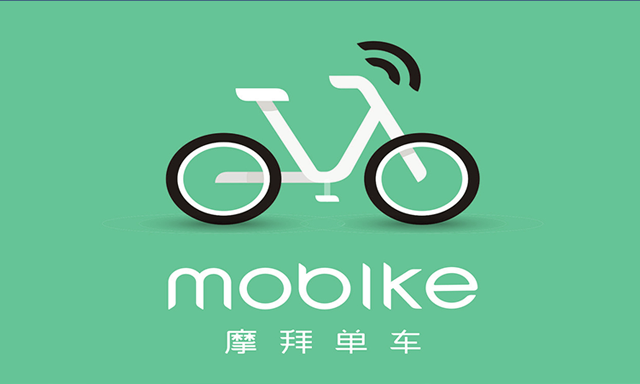

<!DOCTYPE html>
<html lang="en">
<head>
    <meta charset="UTF-8">
    <meta name="viewport"
          content="width=device-width, user-scalable=no, initial-scale=1.0, maximum-scale=1.0, minimum-scale=1.0">
    <title>Title</title>
    <link rel="stylesheet" href="css/common.css">
    <style>
        body{
            background: #ffffff;
        }
        .content{
            width: 100%;
            overflow: hidden;
        }
        .content > *{
            margin-left: 5px;
            margin-right: 5px;

        }
        .content h1{
            margin-top: 0.9rem;
            font-size: 0.8rem;
            color: #333333;
        }
        .content div{
            margin-bottom: 0.5rem;
        }
        .content p{
            font-size: 0.5rem;
            color: #999999;
            padding-left: 10px;
            padding-right: 10px;
        }

    </style>
</head>
<body>
<header>
    
</header>
<section class="content">
    <h1>破窗效应会是ofo的噩梦吗?</h1>
    <div></div>
    <p>因为时间是摩拜的好朋友，对小黄车则是不利的，小黄车有一个先天性的大隐患，这是环境、ofo单车和用户素质等共同引发的破窗效应，如果发酵的话，甚至可以抵消小黄车因为互联网思维更强一些而带来的优势，让短期内的水漫金山式(人民战争汪洋式)市场策略，功亏一篑。       在滴答滴答的时间流逝中，摩拜单车具体有哪些力抗小黄车ofo的策略呢?
        　    前面我们详细对比了小黄车和摩拜单车更细节，更具体的优劣势。当然这个项目很多，我们就抓住最重要的几点。
        刚刚已经介绍了，互联网思维的程度，小黄车明显强一点。那么强一点的话，小黄车作为城市的后来者，其实可以对摩拜单车形成很大的压力。</p>
</section>

</body>
</html>